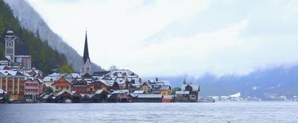

曾被国人复制的奥地利天鹅小镇

四月的奥地利阿尔卑斯山区意外地下起了大雪，从高萨湖出发，一路穿越林海雪原，不到一个小时的车程，来到上奥地利州群山环绕的哈尔施塔特湖。这时的风雪小了下来，民居的屋顶被刷成薄薄的银色，山间云雾还在翻滚，碧波上已是天鹅游曳，十分的宁静安详。

从维也纳、萨尔茨堡也可以坐火车到哈尔施塔特，但是火车在靠山的湖东侧，而小镇在湖西侧，需要再坐渡船过来，约10来分钟，渡轮班次很多，上船后买票，等于游了一趟湖。
哈尔施塔特没有星级大酒店，大都是各具特色的家庭旅馆，临湖旅馆的房间数量不多，一般只有3-5间，却有着无敌的湖景，推开窗户就能看到湖上泛起的清烟，可以坐在房间外的躺椅上喝杯咖啡，看天鹅游曳，很是美好。